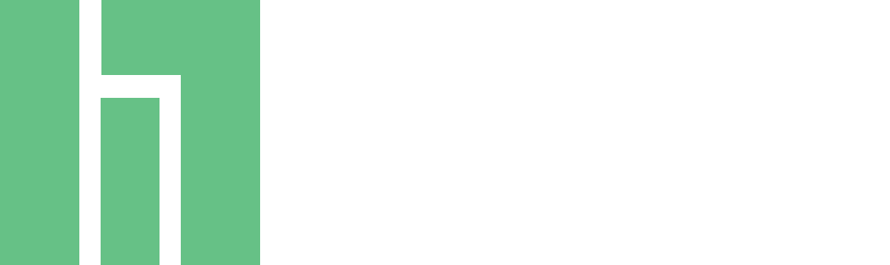

<ion-side-menus enable-menu-with-back-views="false">
  <ion-side-menu-content>
    <ion-nav-bar class="bar-dark">
      <ion-nav-back-button>
      </ion-nav-back-button>

      <ion-nav-buttons side="left">
        <button class="button button-icon button-clear ion-navicon" menu-toggle="left">
        </button>
      </ion-nav-buttons>
    </ion-nav-bar>
    <ion-nav-view name="menuContent"></ion-nav-view>
  </ion-side-menu-content>

  <ion-side-menu side="left">
     <ion-header-bar class="bar-dark">
      </img>
    </ion-header-bar>
    <ion-content>
      <ion-list>
        <ion-item menu-close  href="#/app/home">
          <span class="glyphicon glyphicon-home"></span> Home
        </ion-item>
        <ion-item menu-close href="#/app/liste">
          <span class="glyphicon glyphicon-list"></span> Liste
        </ion-item>
        <ion-item menu-close href="#/app/events">
          <span class="glyphicon glyphicon-calendar"></span> Events
        </ion-item>
        <ion-item menu-close href="#/app/messages">
          <span class="glyphicon glyphicon-home"></span> Nachrichten
        </ion-item>
          <ion-item menu-close href="#/app/settings">
          <span class="glyphicon glyphicon-home"></span> Einstellungen
        </ion-item>
      </ion-list>
    </ion-content>
  </ion-side-menu>
</ion-side-menus>
